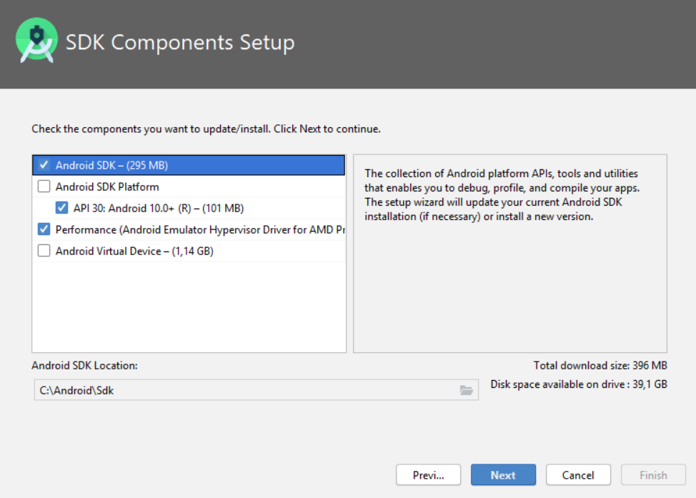
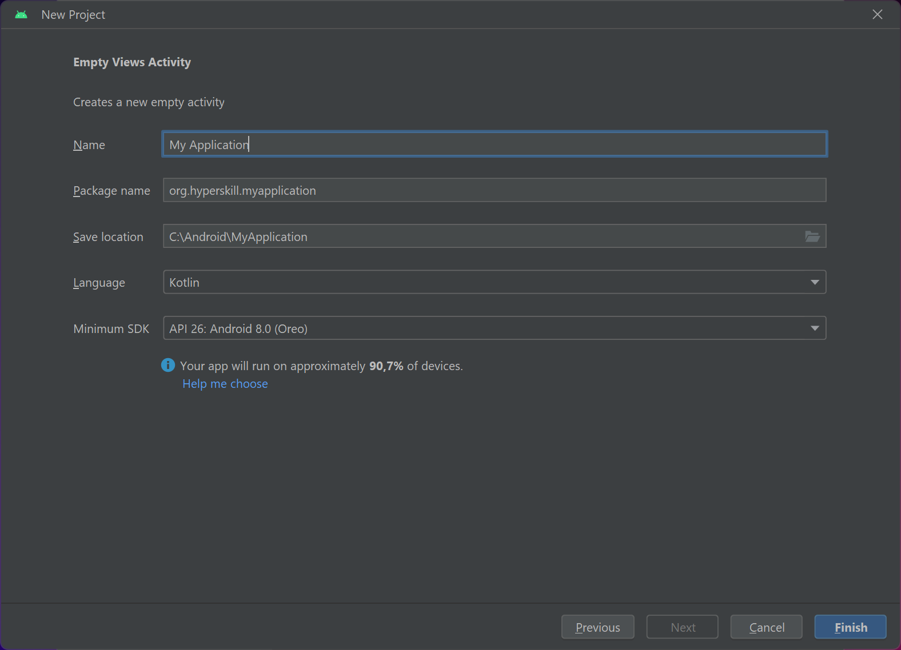

Основи Android studio
Теорія
Android Studio — це офіційне інтегроване середовище розробки (IDE) для розробки додатків Android на основі JetBrains IntelliJ IDEA. За допомогою Android Studio ви можете розробляти програми для всіх пристроїв Android. У цій темі ми розглянемо процес інсталяції та ознайомимося з основними функціями цієї IDE.
§1. Встановлення
По-перше, вам потрібно завантажити програму встановлення Android Studio. Все, що вам потрібно зробити, це відвідати офіційний вебсайт Android Developers, натиснути кнопку "Download Android Studio" (Завантажити Android Studio), і погодитись з положеннями та умовами. Після завершення завантаження запустіть файл.
Відкрийте файл інсталятора та натисніть Next (Далі). Ви побачите список компонентів, які можна встановити. Рекомендовано встановити Android Virtual Device (AVD) (Віртуальний пристрій Android). За допомогою цього інструменту ви зможете запускати та тестувати свої програми прямо на своєму комп’ютері. Якщо ваш комп’ютер не відповідає вимогам, ви можете просто зняти прапорець із цього параметра.
Потім виберіть теку, у якій ви хочете розмістити свою студію. Зачекайте, поки інсталятор витягне все, що йому потрібно, на вашу машину. Після цього запустіть Android Studio.
Вам буде запропоновано імпортувати налаштування. Якщо ви вперше використовуєте Android Studio, просто натисніть ОК, і з’явиться майстер налаштування. Тепер ви можете вибрати тип налаштування: Standard (стандартні) або Custom (користувальницькі).
Виберіть Standard, якщо ви не хочете мати справу з купою налаштувань, і IDE зробить всю роботу за вас. Якщо ви виберете Custom, ви зможете вибрати, де ви хочете мати свій Software Development Kit (SDK) (Набір програмного забезпечення) і якщо хочете відразу налаштувати свій віртуальний пристрій.
Ви майже готові! Тепер Android Studio завантажить усі необхідні файли. Коли це буде зроблено, натисніть Finish (Завершення). Вітаємо: ви успішно встановили Android Studio!
Після відкриття IDE вас зустріне початковий екран:

Тут ви можете побачити найбільш часто використовувані функції цього екрана. Ви можете створити новий проєт Android Studio, натиснувши відповідну кнопку, або відкрити існуючий проєкт зі свого комп’ютера. Крім того, натиснувши кнопку Customize (Налаштувати), ви зможете швидко отримати доступ до налаштувань шрифту та теми IDE. Ви також можете знайти посилання на всі налаштування на цій вкладці:

§2. Налаштування вашого першого проєкту
Давайте створимо новий проєкт і подивимося, як виглядає головне вікно:

Тут вам потрібно вибрати шаблон проєкту. Ви можете вибрати з різних шаблонів для будь-якого типу пристроїв Android: телефонів, планшетів, переносних пристроїв, телевізорів, авто. Зараз ми просто хочемо створити програму для пристрою Android. Клацніть Empty Views Activity (Активність порожніх переглядів) і натисніть Next (Далі).
Compose та XML – це обидва способи створення інтерфейсів користувача в Android. Compose – це новіший інструментарій від Google, який спрощує та пришвидшує процес. Він використовує шаблон Composite і декларативне програмування. XML, з іншого боку, використовує мову розмітки XML для визначення елементів інтерфейсу користувача та їхніх властивостей і вимагає окремого файлу макета XML для кожного екрана чи макета. Цей трек присвячений набору інструментів XML, але ви зможете навчитися Compose в іншому треку на Hyperskill.
Виберіть назву для свого проєкту. Потім установіть місце збереження проєкту та мову програмування для вашої програми. У полі Package name (Назва пакета) введіть назву своєї компанії або свій псевдонім. Зазвичай це виглядає як "domain.companyname.appname".
Після цього вам потрібно вибрати мінімальну версію SDK, яку підтримуватиме ваша програма. Вибирайте з розумом: не вибирайте найновішу або дуже стару версію Android. Дійсно старі версії важко підтримувати, і вони мають менше користувачів, а абсолютно нові версії також мають обмежену кількість користувачів. Пограйте з різними версіями SDK і зверніть увагу на відсоток пристроїв, які зможуть запускати вашу програму. Станом на 2023 рік найкращим варіантом є API 26 і вище.
Натисніть Finish (Готово). Вітаємо, ви успішно створили свій проєкт! Android Studio створить ваш проєкт, і ви побачите Main window (Головне вікно).
§3. Огляд проєкту

На перший погляд це може виглядати дещо заплутаним, але не хвилюйтеся: ви зрозумієте це крок за кроком.
Ліворуч ви можете побачити Project View (Перегляд проєкту). Це дає вам швидкий доступ до ваших ресурсів, коду та файлів збірки. Ваш код знаходиться в папці "java", а активи вашого проєкту, такі як зображення, піктограми, шрифти та тексти, знаходяться в папці "res". Якщо ви не хочете відволікатися від свого коду, ви завжди можете приховати структуру проєкту, натиснувши кнопку "Project" (Проект) на лівій бічній панелі.
Праворуч ви побачите відкриті файли. Це називається вікном редактора. Ви можете перемикатися між файлами на панелі навігації.
Угорі ви можете побачити шлях до відкритого файлу та панель інструментів. Панель інструментів дозволяє виконувати цілий ряд дій, як-от створення, налагодження та запуск програми. Вона також містить багато корисних інструментів Android, які допоможуть вам у подальшому процесі розробки.
Погляньте на всі ці кнопки навколо вікна IDE: це інструменти, які надають вам доступ до певних завдань, як-от пошук, керування версіями, файли пристрою тощо. Найпоширенішими є "Logcat", "TODO" і "Terminal".
Статус-бар (рядок стану) розташовано внизу. Там ви можете побачити статус свого IDE та проєкту. Усі попередження, підказки та повідомлення відображаються в рядку стану.
Щоб дізнатися більше про Android Studio, перегляньте Інструмент Android Studio Windows.
§4. Висновок
У цій темі ми детально розповіли, як встановити IDE та створити проєкт. Ви знаєте, як виглядає головний екран, і маєте базове уявлення про функції Studio. Тепер, коли ви знайомі з Android Studio, ви можете почати розробляти власні програми!
Ви також можете переглянути Урок на hyperskill.org.
Практичні завдання та відповіді
Подано завдання та варіанти відповідей. Правильний варіант виділено синім кольором.
№1. Функція Android Studio
Запитання: Напишіть програму, яка читає послідовність чисел із першого рядка та число x із другого рядка. Тоді він має вивести всі позиції x в числовій послідовності.
Подрахунок позицій починається з 0. Якщо x немає в послідовності, надрукуйте рядок "not found" (не знайдено) (лапки опущені, малим регістром).
Позиції мають відображатися в одному рядку в порядку зростання значення.
Виберіть один варіант зі списку:
- LogCat
- Android Profiler
- Android Project Wizard ✔
- Android Virtual Device
Пояснення. Ось код проблеми на Python:
Приклад на Python
def find_positions(numbers, x):
positions = []
for i, number in enumerate(numbers):
if number == x:
positions.append(i)
return positions
numbers = [1, 2, 3, 4, 5, 6, 7, 8, 9, 10]
x = 5
positions = find_positions(numbers, x)
if positions:
print(" ".join(map(str, positions)))
else:
print("not found")
Цей код спочатку визначає функцію під назвою find_positions(), яка приймає два списки як вхідні дані: список чисел і число x. Потім функція повторює список чисел і перевіряє, чи кожне число дорівнює x. Якщо це так, функція додає індекс числа до списку під назвою позиції. Потім функція повертає список позицій.
Потім функція main визначає номери списку та x. Список номерів містить числа 1, 2, 3, 4, 5, 6, 7, 8, 9 і 10. Змінній x присвоєно значення 5.
Потім функція main викликає функцію find_positions(), передаючи числа та списки x як вхідні дані. Функція find_positions() повертає список позицій, який потім друкується на консолі.
У цьому випадку список позицій міститиме значення 4, оскільки число 5 знаходиться під індексом 4 у списку номерів. Отже, результатом роботи програми буде: 4.
Якщо число x не знайдено в списку чисел, функція find_positions() поверне порожній список. У цьому випадку основна функція виведе на консоль повідомлення "не знайдено".
Що стосується параметра, який потрібно вибрати, це залежить від того, що ви хочете зробити з програмою. Якщо ви хочете налагодити програму, ви можете вибрати LogCat. Якщо ви хочете створити профіль програми, ви можете вибрати Android Profiler. Якщо ви хочете створити новий проект Android, ви можете вибрати Майстер проєктів Android. А якщо ви хочете створити віртуальний пристрій Android, ви можете вибрати віртуальний пристрій Android.
Найкращий варіант для вас залежатиме від ваших конкретних потреб.
Ось код Java для проблеми:
Приклад 1 на Java
import java.util.Scanner;
public class FindPositions {
public static void main(String[] args) {
Scanner scanner = new Scanner(System.in);
// Read the sequence of numbers
String[] numbersStr = scanner.nextLine().split(" ");
int[] numbers = new int[numbersStr.length];
for (int i = 0; i < numbersStr.length; i++) {
numbers[i] = Integer.parseInt(numbersStr[i]);
}
// Read the number x
int x = Integer.parseInt(scanner.nextLine());
// Find the positions of x in the sequence
List<Integer> positions = new ArrayList<>();
for (int i = 0; i < numbers.length; i++) {
if (numbers[i] == x) {
positions.add(i);
}
}
// Print the positions
if (positions.isEmpty()) {
System.out.println("not found");
} else {
for (int i = 0; i < positions.size(); i++) {
if (i > 0) {
System.out.print(" ");
}
System.out.print(positions.get(i));
}
}
}
}
Цей код спочатку створює об’єкт Scanner для читання введених даних із консолі. Потім він зчитує з консолі послідовність чисел і число x.
Далі створюється список під назвою positions для зберігання позицій x у послідовності. Потім він повторює послідовність чисел і перевіряє, чи кожне число дорівнює x. Якщо так, номер додається до списку позицій.
Зрештою, код друкує позиції x. Якщо число x не знайдено в послідовності, список позицій буде порожнім і код виведе повідомлення "not found" (не знайдено).
Приклад 2 на Java
import java.util.*;
public class Main {
public static void main(String[] args) {
Scanner scanner = new Scanner(System.in);
String[] numbers = scanner.nextLine().split(" ");
String x = scanner.nextLine();
List<String> positions = new ArrayList<>();
№2. Android Studio
Запитання: Що робить ця кнопка на панелі інструментів?

Виберіть один варіант зі списку:
- Створює проєкт ✔
- Запускає програму
- Відкриває SDK Manager
- Налагоджує програму
Пояснення. Правильна відповідь Build the project (Створює проєкт).
№3. Старі версії
Запитання: Ми коротко розповіли, які проблеми можуть виникнути, якщо при створенні проєкту вибрати стару версію Android. Отже, що саме з цим не так?
Виберіть один варіант зі списку:
- Ніхто не користується старими пристроями, тому немає потреби їх підтримувати.
- Важко підтримувати старі версії Android. ✔
- Ви не можете запускати старі програми на нових пристроях.
- Старі пристрої не підтримують програми, написані мовою Kotlin.
Пояснення. Правильна відповідь: Важко підтримувати старі версії Android.
Ось деякі з причин, чому важко підтримувати старі версії Android:
- Google більше не підтримує старі версії Android. Це означає, що вони не отримуватимуть оновлень безпеки, що може зробити вашу програму вразливою для атак.
- Старі версії Android можуть не мати тих самих функцій чи можливостей, що й новіші версії. Це може ускладнити розробку програми, яка працюватиме як на старих, так і на нових пристроях.
- Ринкова частка старих версій Android зменшується. Це означає, що якщо ви виберете підтримку старих версій, ви будете націлюватися на все меншу аудиторію.
Ось деякі проблеми, які можуть виникнути, якщо ви виберете для свого проєкту стару версію Android:
- Ваша програма може не працювати належним чином на старих пристроях. Це може бути через проблеми з несумісністю, вразливі місця в безпеці або відсутність функцій.
- Можливо, вам доведеться витратити більше часу та ресурсів на підтримку старих версій програми. Це може включати тестування, налагодження та виправлення помилок.
- Ви можете втратити користувачів, які використовують старі пристрої. Це може вплинути на загальну базу користувачів і дохід вашого додатка.
Отже, якщо ви збираєтеся вибрати стару версію Android для свого проєкту, важливо ретельно зважити ризики та переваги. У більшості випадків краще вибрати новішу версію Android, яка все ще підтримується Google і має більшу частку ринку.
№4. Категорії віртуальних пристроїв
Запитання: Давайте розглянемо процес створення віртуального пристрою. Які категорії присутні в конфігурації віртуального пристрою?
Виберіть один варіант зі списку:
- Auto | Tablet | iPhone
- TV | Phone | Wear OS | Tablet ✔
- Huawei | Samsung | Xiaomi | Honor
- Apple | Google | Amazon | Tesla
Пояснення. Правильна відповідь TV | Phone | Wear OS | Tablet.
Конфігурація віртуального пристрою (VDC) — це діалогове вікно в Android Studio, яке дозволяє створювати віртуальні пристрої Android (AVD) і керувати ними. VDC поділяється на чотири категорії:
- Телефон: ця категорія містить AVD, які емулюють телефони Android.
- Телевізор: ця категорія містить AVD, які емулюють Android TV.
- Wear OS: ця категорія містить AVD, які емулюють розумні годинники Android Wear.
- Планшет: ця категорія містить AVD, які емулюють планшети Android.
Конкретні AVD, доступні в кожній категорії, відрізнятимуться залежно від Android SDK, який ви встановили.
Інші параметри у вашому запитанні не є категоріями в конфігурації віртуального пристрою.
№5. Збіг
Запитання: Установіть відповідність до кожної абревіатури з правильним описом.
- SDK – набір інструментів для створення програм на певній платформі
- AVD – інструмент для імітації реального пристрою
- IDE – програма, яка допомагає писати та тестувати програмне забезпечення
Пояснення. Правильні відповідності для абревіатур:
- SDK – комплект розробки програмного забезпечення (SDK) – це набір інструментів і бібліотек, які дозволяють розробникам створювати програми для певної платформи.
- AVD – віртуальний пристрій Android (AVD) – це програмна емуляція пристрою Android, який можна використовувати для тестування та розробки програм Android.
- IDE – інтегроване середовище розробки (IDE) – це програма, яка надає комп’ютерним програмістам комплексні можливості для розробки програмного забезпечення.
№6. Розташування файлу
Запитання: де знаходяться файли з розширеннями .jpg, .mov, .gif або .txt?
Виберіть один варіант зі списку:
- java
- Android Manifest
- Gradle Scripts
- res ✔
Пояснення. Правильна відповідь: res.
Папка res у проекті Android містить усі ресурси програми, зокрема зображення, аудіофайли та текстові файли. Згадані вами розширення файлів є поширеними форматами файлів зображень і анімацій, тому всі вони належатимуть до папки res.
Інші варіанти у вашому запитанні не є папками, які зазвичай використовуються для зберігання ресурсів.
- Папка java містить вихідний код Java програми.
- Файл AndroidManifest.xml містить маніфест програми, який визначає компоненти та дозволи програми.
- Папка Gradle Scripts містить сценарії Gradle, які використовуються для створення програми.
№7. Вікно IDE
Запитання: Раніше ми говорили про елементи головного вікна. Назвіть частину екрана, яка дає вам доступ до ресурсів, коду та файлів збірки.
Виберіть один варіант зі списку:
- Editor Window (Вікно редактора)
- Project Structure (Структура проєкту)
- Status bar (Рядок стану)
- Project View (Перегляд проекту) ✔
Пояснення. Правильна відповідь – Project View (Перегляд проєкту).
Перегляд проєкту — це панель у головному вікні Android Studio, яка показує структуру вашого проєкту, зокрема ваші ресурси, код і файли збірки. Перегляд проєкту можна використовувати для навігації проєктом, відкриття файлів і керування залежностями проєкту.
Вікно редактора – це місце, де ви пишете та редагуєте свій код. Структура проєкту — це діалогове вікно, яке дозволяє вам налаштувати структуру вашого проєкту, наприклад модулі, які він містить, і бібліотеки, які він використовує. Рядок стану розташований у нижній частині головного вікна та відображає інформацію про поточний стан вашого проєкту, наприклад номер рядка та номер стовпця курсора, поточну конфігурацію збірки та кількість помилок і попереджень у вашому коді.
Ось знімок екрана Project View в Android Studio:

Як бачите, вікно проєкту поділено на два основні розділи: дерево проєкту та файли проєкту. Дерево проєкту показує структуру вашого проєкту, де кожен вузол представляє папку або файл. Файли проєкту показують вміст вибраної папки або файлу.
Ви можете використовувати перегляд проєкту для навігації по проєкту, розгортаючи та згортаючи вузли в дереві проєкту. Ви також можете двічі клацнути на вузлі, щоб відкрити відповідний файл у вікні редактора.
Перегляд проєкту — це потужний інструмент, який може допомогти вам керувати проєктами Android. Я рекомендую вам ознайомитися з ним, якщо ви новачок у розробці Android.
№8. Назва пакета
Запитання: Люсі любить каву. Вона вирішила створити власний додаток із найкращими способами приготування кави. У неї вже є сайт "lucylovescoffee.com", а її додаток називається Barista. Якою має бути назва пакета програми Люсі?
Пам’ятайте, що все має бути написано малими літерами.
Введіть короткий текст: com.lucylovescoffee.barista ✔
Пояснення. Назва пакета програми для Люсі має бути "com.lucylovescoffee.barista".
Назва пакета – це унікальний ідентифікатор програми Android. Він використовується для ідентифікації програми в магазині Google Play і запобігання конфліктам з іншими програмами. Ім’я пакета має бути написано малим регістром і може містити лише літери, цифри та підкреслення.
У випадку Люсі вона могла б використовувати доменне ім’я свого вебсайту як основу для назви свого пакета. Це полегшить користувачам пошук її програми в Play Store. Тоді вона могла додати назву свого додатка в кінець назви пакета.
Отже, назва пакета com.lucylovescoffee.barista була б гарним вибором для програми Люсі. Він унікальний, легко запам’ятовується та відповідає вмісту програми.
Ось деякі інші фактори, які Люсі могла б враховувати, вибираючи назву пакета програми:
- Довжина імені. Чим коротша назва, тим легше її запам’ятати та ввести.
- Наявність імені. Ім’я має бути доступним як ім’я пакета програми як у Google Play Store, так і в Apple App Store.
- Унікальність імені. Назва має бути досить унікальною, щоб її не було легко сплутати з іншими програмами.
- Запам’ятовуваність імені. Ім’я має запам’ятовуватися, щоб користувачі могли легко знайти його, коли шукатимуть програми для приготування кави.
Зрештою, найкраща назва пакета додатка Люсі – це та, яка, на її думку, є найактуальнішою, легкою для запам’ятовування та доступною.
Що таке Android Studio? Базове використання Android Studio
Android Studio – це інтегроване середовище розробки (IDE), яке використовується для розробки програм Android. Він надає повний набір інструментів і функцій, які спрощують процес розробки додатків, зокрема редактор коду, редактор візуального макета, інструменти налагодження тощо.
Щоб почати використовувати Android Studio, виконайте такі основні дії:
- Завантажте та встановіть Android Studio з офіційного вебсайту.
- Запустіть Android Studio та створіть новий проєкт.
- Виберіть шаблон проєкту, наприклад «Порожня діяльність» або «Основна діяльність».
- Налаштуйте параметри проєкту, наприклад назву проєкту, назву пакета та мінімальну версію SDK.
- Використовуйте редактор коду, щоб написати код програми, або використовуйте редактор візуального макета, щоб створити інтерфейс користувача програми.
- Запустіть програму на віртуальному або фізичному пристрої, щоб перевірити її.
- Усувайте будь-які проблеми, які виникають під час тестування, за допомогою інструментів налагодження, наданих Android Studio.
Це лише основи, але Android Studio пропонує багато додаткових функцій, які можуть допомогти вам розробляти високоякісні програми для Android.
Android Studio — це офіційне інтегроване середовище розробки (IDE) для розробки додатків Android. Він створений на основі програмного забезпечення IntelliJ IDEA від JetBrains і розроблений спеціально для розробки Android. Він доступний для завантаження в операційних системах Windows, macOS і Linux.
Android Studio надає ряд функцій, які роблять його потужним інструментом для розробки Android, зокрема:
- Редактор коду з підсвічуванням синтаксису, автозавершенням коду та лінтінгом
- Графічний редактор компонування
- Налагоджувач
- Профайлер
- Вбудований емулятор
- Інфраструктура тестування
- Різноманітність плагінів
Щоб написати базовий код за допомогою Android Studio, виконайте такі дії:
- Створіть новий проєкт.
- Виберіть шаблон для свого проєкту.
- Додайте код до свого проєкту.
- Запустіть свій проєкт в емуляторі або на фізичному пристрої.
Ось приклад простої програми для Android, яку можна створити за допомогою Android Studio:
public class MainActivity extends AppCompatActivity {
@Override
protected void onCreate(Bundle savedInstanceState) {
super.onCreate(savedInstanceState);
setContentView(R.layout.activity_main);
}
}
Цей код створює просту дію, яка відображає порожній екран. Ви можете налаштувати зовнішній вигляд своєї програми, додавши більше коду до цього файлу.
Для отримання додаткової інформації про те, як писати код за допомогою Android Studio, ви можете звернутися до таких ресурсів:
- Документація Android Studio: https://developer.android.com/studio/
- Посібники з розробки Android: https://developer.android.com/training/
- Зразки коду Android: https://developer.android.com/samples/